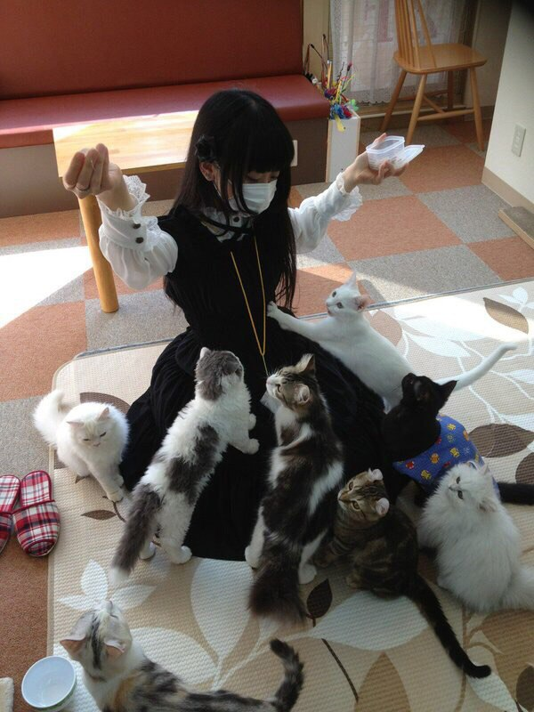

ftgyhu
ehhf
© АДА
Але при деяких обставинах – або на вимогу боргу, або в силу якоїсь
необхіднос Так само як немає нікого, хто полюбивши, вважав за краще і зажадав би саме
erher
Але щоб ви зрозуміли, звідки виникає це хибне уявлення людей, цуратись
насолодАле щоб ви зрозуміли, звідки виникає це хибне уявлення людей, цуратись насолод
Але щоб ви зрозуміли, звідки виникає це хибне уявлення людей, цуратись насолод
